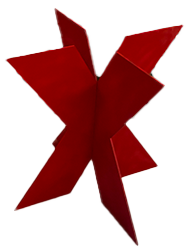
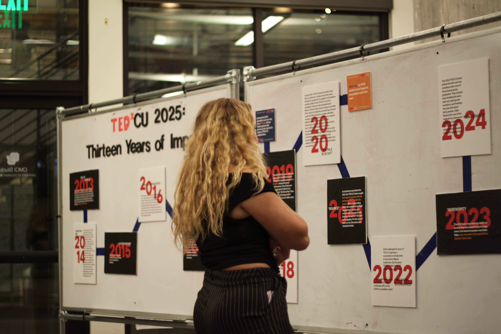
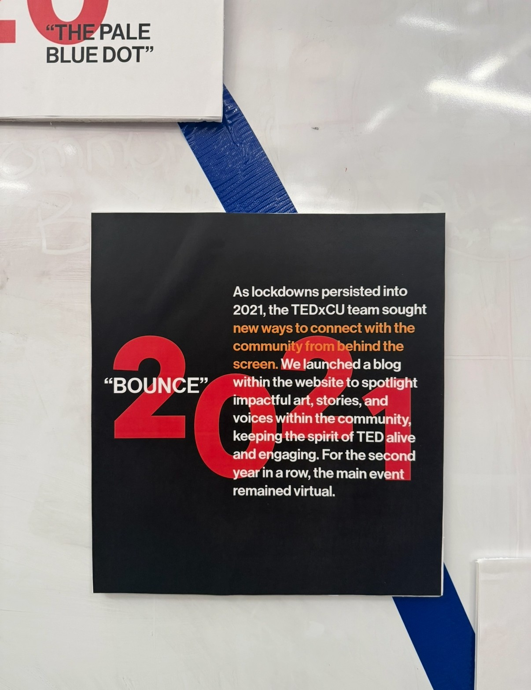
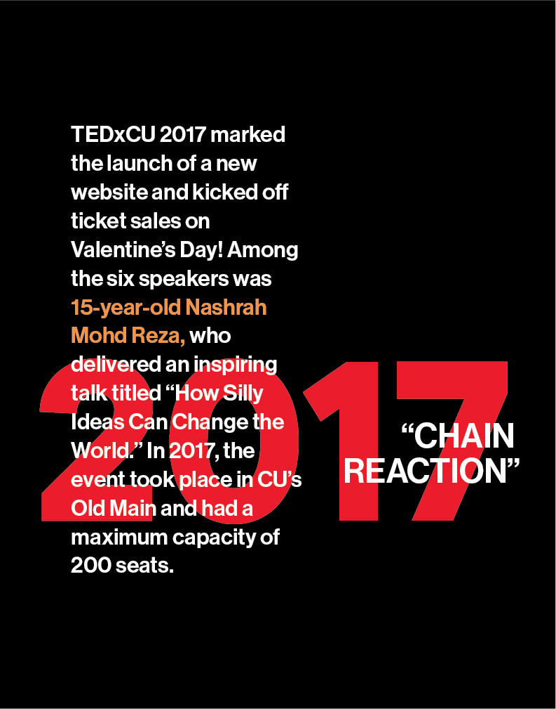
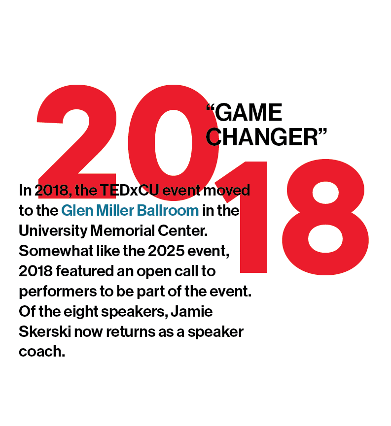
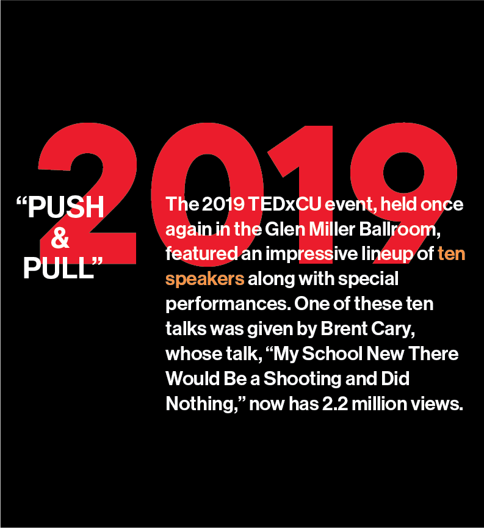

At TEDxCU, curation is not just about aesthetics. It’s about shaping the audience’s experience from the moment they step into the venue.

I design and implement installations that engage over 1000 attendees with the event’s theme and speakers, whether through interactive, hands-on experiences or intentionally crafted visual storytelling. My process involves analyzing speaker topics, mapping audience flow, considering spatial constraints, and developing 3D mockups to plan installations within the lobby. I construct these pieces using wood and other materials ensuring a high level of polish.
On the day of the event, I oversee all installation logistics, integrating them with live event entertainment and sponsorship tables. I monitor audience interaction in real time, remaining flexible and responsive.


Thirteen Years of TEDxCU

For TEDxCU’s 13th year, I created an installation to be displayed at our speaker meet-and-greet to give our speakers a meaningful grasp on the history they were becoming part of. The installation featured a timeline of key moments and celebrated the speakers and coaches who’ve helped shape our TEDx events.
I had to be extremely conscious of my materials as the space was sponsored. We also had to be able to put the installation up in 30 minutes and take it down after the event in even less. I decided the best way to go about this was to avoid vinyl lettering and opted to create a design for each year on Adobe Illustrator and paste them on foamcore boards for durability. To help the title stand out, I had each letter laser cut so that we could attach them to the display with painter's tape and take them down relatively quickly.



